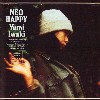
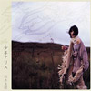

strange music page
japanese stange music * * * female vocals
#女性ボーカルモノです。昔からボーカルモノのアルバムの比率が男:女 = 1:9 なもんで。strange musicのトコに入れちゃったモノも多いんですけど、あっちに入れるのはちょっとなーみたいなのはこっちです。
なんか....俺アニメ系？やばいかなー、なんて気もしてきたけどまぁいいや。女性ボーカル物はまだまだ書くヤツ有ります。ちまちま更新しますので。
- 新居昭乃
- 岩男潤子
- 岩城由美
- こなかりゆ
- 坂本真綾
- 谷山浩子
- 藤井珠緒
- hal
- 原みどり
- Port of Notes
- HONZI
- つじあやの
- MariMari
- 吉岡忍
- Ring Ring
- 月よ凍れ
- 金色の目
- 地図を行く雲
- 美しい星
- 1999
- 約束
- ロゼ・ルージュ
- Sky Lounge
- 新居昭乃
- 門倉聡 (keyboards)
- 金子飛鳥 (violin)
- 清水信之 (guitars,keyboards)
- 鈴木智文 (guitars)
- 富倉安生 (bass)
- 中原信雄 (bass)
- 村上秀一 (drums)
- 渡辺等 (bass)
- 旭孝 (flute)
VICTOR: VDR-1284 (1986)
#新居昭乃さんのベスト....なんか昔聴いてそんな好きでもなかったんですけどね。女性ボーカル好きな人の中では結構評価高いようで。
ゲームとかアニメとかのCDにちょこちょこ入ってた曲を集めたモノみたいです。元のアルバムで聴くとアニメっぽい雰囲気を感じてちょっと嫌だったんですけど。こーして聴くといろんな所から集めたにしてはとても統一感が有って....うーんでもすごい良く出来てます。5曲目なんか
カラクみたい。(1999.9.30)
- 星の雨
- 遥かなロンド
- Moon Light Anthem 〜槐1991〜
- 三日月の寝台
- 凍る砂
- 風と鳥と空 〜reincaenation〜
- Adesso e fortuna 〜炎と永遠〜
- VOICES
- 金色の時 流れて
- Licao do Vento
- 歌わないうた
- 月からの祈りと共に
- Siva〜佇む人〜
- 三日月と私
- WANNA BE AN ANGEL
composed by 新居昭乃 (1.3.4.5.6.7.11.14.)
composed by 菅野よう子 (2.8.9.12.15.)
composed by 大島ミチル (10.)
composed by 門倉聡 (13.)
- 新居昭乃 (vocals)(keybaoards on 11.)
- 菅野よう子 (keyboards on 2.8.9.12.15.)(programming on 2.9.12.)
- 俤郁夫 (percussions on 2.)
- 坂元俊介 (synthesizer manipurate on 1.2.8.9.14.15.)
- 篠崎正嗣 (violin on 4.)
- バカボン鈴木 (bass on 11.)
- 保刈久明 (guitars on 1.15.)(programming on 1.14.)
- 溝口肇 (cello on 9.)
- 渡辺等 (bass on 1.2.14.15.)
- 門倉聡 (piano on 3.13.)
- 金子飛鳥ストリングス (strings on 2.)
- Wuyontana (chorus on 15.)
- Gabriera Robin (chorus on 15.)
VICTOR ENTERTAINMENT: VICL-60042 (1997)
- Zinctie Trance
- 鉱石ラジオ
- Satellite Song
- エウロパの氷
- きれいな感情
- How about u
- 赤い砂 白い花 (marrakesh mix)
- Trance Transistor Table Radio
- 案内マウス
- Welcome to Riskcation Corporation
- チェコの夢〜Fall
- 新居昭乃 (vocals)
- 保刈久明 (guitars,programming,keyboards,radio)
- 渡辺等 (bass on 2.)
- Sou Hideharu (bass on 5.)
- 佐野康夫 (drums on 2.10.)
- 田中透 (drums on 5.)
- 細海魚 (rhodes,hammond,harpsichord,piano,accordion,auto harp on 2.5.6.7.8.)
- 桑野聖カルテット (strings on 3.4.)
- 四家卯大 (cello on 5.)
- 桑野聖 (violin on 5.)
VICTOR ENTERTAINMENT: VICL-60721 (2001.5.23)
#声優....さんかな?(ゴメンナサイ情報ゼロ)
斎藤ネコさんプロデュースです、毒気の抜けた谷山浩子みたいな感じの....というか谷山浩子さんの曲。80年代前半清純派アイドルポップスみたいな感じです、尾崎亜美だし。
お仕事系ではありますが、Ma*ToさんやMeckenさんやWhachoさん等参加してます。
聴きたかったのは6曲目の福原まりさんの曲、ピアノとボーカルだけのちょっと暗めの...内田有紀のアルバムに入ってたのもこんな感じだったかも。
- 太陽のくに
- 夜明けのFrench Kiss
- 運命のエントランス
- 三日月の誘惑
- あなたを忘れたい
- 勘違いの輪舞曲
- 鳥籠姫
- 追憶のエチュード
- 晩夏
- ねこ曜日
produced by 斎藤ネコ
composed by 福原まり (6.)
composed by 谷山浩子 (7.10.)
composed by 相曾晴日 (1.9.)
composed by 尾崎亜美 (3.8.)
arrangement by 斎藤ネコ (1.2.4.5.7.9.10.)
- 福原まり (piano on 6.)
- Mecken (bass on 1.2.4.)
- Ma*To (percussions on 7.)
- Whacho (percussions on 7.)
- 石井AQ (programming,computer on 1.2.4.5.7.10.)
- 斎藤ネコ (programming,keyboards,violin on 1.2.4.5.7.8.9.10.)
PONY CANYON: PCCA-00978 (1996)
#岩城由美さんのソロアルバム。ほとんどの曲を金津ヒロシさん(ex.-プラチナキット)がアレンジ。明るい素直な良いポップスと思うんですけど、なんか全然売れなかった模様。いけてないジャケットのせいかな？時々ふにゃふにゃするボーカルも結構好きなんですけど。
今いずこ？とか思ってたらCMの世界では有名な人みたいですね。BOOK OFFで\950でした。(2001.10.8)
- 空中線
- ドロップ・リップ・タラップ・ホップ
- 愛情の天才
- ここまでおいで
- 西行きのバス
- ハオ！
- 朝
- チェリーのお酒
- ELIZA
- 7Days Hat
- 私のきもち
Co-produced by 金津ヒロシ
- 岩城由美 (vocals,piano)
- 金津ヒロシ (keyboards,programming)
- Miura Kohji (drums)
- 渡辺等 (bass,mandolin,cello,ukulele)
- MECKEN (bass)
- 伊丹雅弘 (guitars,mandolin,ukulele)
- 鈴木智文 (guitars)
- 小倉博和 (guitars)
- WHACHO (percussions)
- Nakamura Tsutomu (keyboards)
- 小川文明 (keyboards)
- 矢口博康 (sax)
- 菊地成孔 (sax)
- 武川雅寛 (violin)
- Asakawa Tomoyuki (harp)
- 大石真理恵 (marimba)
- ライオンメリー (accordion)
- 横川理彦 (bouzouki,mandolin)
- 水谷紹 (backing vocals)
- Cheryl Porier (backing vocals)
- Dana Kral (backing vocal)
NIPPON COLOMBIA: COCA-11933 (1994.11.21)
#このCDの「うちに来て」って曲を、昔
金津ヒロシバンドと
東京中低域で聞いて気になってました。1996年に出た岩城由美さんの2ndです。
たいていこーゆーコメント書くときとかって、Googleで検索かけるんですけど、今「岩城由美」で検索かけたら
自分のところが1発目。こんだけインターネット普及しても無い情報は無いのね。
んで
上のと基本線は変わらない、良心的なポップス。目新しいこととかは無いんですけど、とても心地よいです。最近はこーゆー感じの落ち着いて聴けるような感じの女性ボーカルのポップスってなかなか無いような気が。(2002.7.16)

- 愛さえなけりゃ
- I want you everything
- おすそわけ
- ちがう世界で目覚めたい
- Marble
- We are
- うちに来て
- 恋の襲来
- Happy天国
- 太陽が見ていた
produced by 金津ヒロシ
produced by EBBY (6.8.)
- 岩城由美 (vocals)
- 矢部浩志 (drums)
- 伊丹雅弘 (guitars)
- 金津ヒロシ (guitars on 7.)
- EBBY (guitars on 6.8.)
- Mecken (bass)
- 松永孝義 (bass on 6.8.)
- Awano Kouji (keyboards)
- 駒沢宏城 (pedal steel on 6.)
- 近藤達郎 (keyboards on 6.)
- Whacho (percussions)
- 村田陽一 (trombone,flugelhorn,euphonium on 6.8.)
- ロケットマツ (accordion on 6.)
- 三沢いずみ (vibraphone)
- Sagayama Mari (chorus)
- 直枝政太郎 (chorus)
NIPPON COLOMBIA: COCA-13091 (1996.3.20)
#弟から奪取。2枚目です、たしか。
- 37才のbaby (take.1)
- おかしなタマゴ (home take)
- おかえりなさい、うれしい
- 空の下の天国
- 犬の気持ち
- 夏がやってくる
- おかしなタマゴ
- こなかりゆ
- Marc Ribot (guitars on 1.4.7.)(guitar,mini horn on 5.)
- John Medeski (hammond-B3,wurlitzer,piano on 1.4.7.)
- Chris Wood (wood bass on 1.4.7.)
- Billy Martin (drums on 1.4.7.)
- Imai SHINOBU (guitars on 1.4.7.)
- 駒沢宏城 (pedal steel guitar on 1.4.7.)
- 桜井芳樹 (guitars on 3.6.)
- 松永義孝 (bass,wood bass on 3.6.)
- ロケットマツ (piano,wurlitzer,hammond on 3.6.)
- Okachi AKIHIRO (drums,percussions on 3.6.)
- HONZI (violin o 3.6.)
- 菊地成孔 (sax,horn arrangement on 3.6.)
- Araki TOSHIO (trumpet on 3.6.)
- Hirohara MASANORI (trombone on 3.6.)
- Imai SHINOBU (guitar,mandolin,bass,synthesizer on 2.)
POLYSTAR: PSCR-5607 (1997.5.25)
#す、すっげー面子。と思いました友達から借りて。J.MedeskiにM.RibotにB.Wareに....P.Schererまで。
こなかりゆさんのボーカルはこんな超アクの強い人達にも負けないくらいしっかりしてます、年齢いくつか知らないですけど落ちつきすら感じます。
んでこのアルバムで気になったのは、9曲目"すきよ"。なんだか民族音楽みたいな音からはじまってtablaとか、なんかB.Fontaineみたいな雰囲気だなとか(あ、勝手な印象なんで...スミマセン)この一曲だけちょっと特別、無かったらちょっと聞き流しちゃってたかも。(2000.9.3)
- 37才のbaby
- シャックリ
- ミニチュア・バービー
- おかしなタマゴ
- 犬の気持ち
- SPACE IS BIG O
- あららら、あららら
- しみじみ愛されてます
- すきよ
- おばあちゃんは女の子
- 夢見がち
- 縁側
- エバンストンの夏
- A WALK (Inst.)
- John Medeski (wurlitzer,hammond B3,clavinet,piano)
- Billy Martin (drums,percussions)
- Chris Wood (wood bass)
- Marc Ribot (guitars,ukulele)
- Yuval Gabay (drums)
- Sebastian Steinberg (bass)
- Charlie Giordano (piano,accordion,synthesizer)
- Peter Scherer (wurlitzer,sampler)
- Roy Nathanson (sax)
- Bill Ware (vibes)
- 松永孝義 (wood bass)
- 矢口博康 (sax)
- 松本治 (trombone,euphonium)
- つづらのあつし (sax)
- Ma*To (tabla)
- ロケットマツ (piano)
- Imai Shinobu (mandolin)
POLYSTAR: PSCR-5847 (2000.3.1)
#えーと超カワイイです。基本的には前2作の路線からそんなに変わってないのですが、ポップな3曲目とか、変な芸風の5曲目とかちょっとバリエーションが増えた感じです。また前と似たようなアルバムかなと思っていてそのとおりだったのでした。まあいいやって感じです。
- 夏の光
- 私の運命線
- ショートケーキのサンバ
- 一緒に帰ろうよ
- 嵐前の静けさ
- プレイガーリー
- 結婚のテーマ
- 結婚行進曲
- キューティー
- セシルカットブルース
- やられちゃった女の子
- 小島麻由美 (vocals)(celesta on 7.11.)(kazoo on 4.)
- 渡辺等 (wood bass)
- 鶴来正基 (piano,organ)
- 塚本功 (electric guitars)
- ASA-CHANG (percussions on 1.4.6.8.)
- 清水一登 (bass clarinet,vibraphone on 3.)
- 寺谷誠一 (drums)
- 菊地成孔 (sax on 9.)
- 松本治 (horn arrange,trombone on 10.)(口笛 on 4.)
- 国枝静治 (flute on 1.3.9.)
- エリック宮城 (trumpet on 10.)
- 平原まこと (tenor sax,baritone sax on 10.)
PONY CANYON: PCCY-01206 (1998.6.17)
- ポルターガイスト
- 眩暈
- 赤と青のブルース
- 黒い革のブルース
- ハードバップ
- 月の光
- 恋はサイケデリック Album Version
- ロックステディガール Album Mix
- 愛しのキッズ
- 光と影
- 小島麻由美
- ASA-CHANG (drums,percussions)
- 渡辺等 (contrabass,cello)
- 塚本功 (guitars,banjo)
- 清水一登 (piano,vibraphone,bass clarinet)
- 国吉静治 (flute)
- リョウ・アライ (drums)
- 川上つよし (bass)
- 沖祐市 (piano)
- 西村浩二 (trumpet)
- 荒木敏男 (trumpet)
- 工藤正和 (trumpet)
- 岡崎良郎 (trumpet)
- 菊地成孔 (sax)
- GAMO (sax)
- 竹野昌邦 (sax)
- 井上juju博之 (sax)
- 村田陽一 (trombone)
- 広原正典 (trombone)
- 松本まさし (trombone)
PONY CANYON: PCCA-01836 (2003.1.16)
#"DIVE"がとっても良かった、坂本真綾の....たぶん1枚目。
なんか声優の人みたいですけどね。カワイイですよね基本的に昔のアイドルみたいな路線で。アイドルポップスのファンって絶滅したかと思ったら今こっちの方に流れてるんですかね？
- Free Myself
- I and I
- グレープフルーツ
- 右ほっぺのニキビ
- ポケットを空にして
- オレンジ色とゆびきり
- 青い瞳
- 約束はいらない
- MY BEST FRIEND
- 風が吹く日
- そのままでいいんだ
produced by 菅野よう子
- 坂本真綾 (vocals)
- 菅野よう子 (keyboards)
- 宮田繁男 (drums)
- 渡辺等 (bass)
- 今堀恒雄 (guitars)
- カケハシイクオ (percussions)
- 荒木敏男 (trumpet)
- 村田陽一 (trombone)
- 山本拓夫 (alto sax)
- 平ヶ倉良枝 (drums)
- Urata Keishi (synthesizer manipulate)
- 三沢またろう (percussions)
- Shinozaki Masatsugu Group (strings)
- Furukawa Masayoshi (guitars)
- 岡部洋一 (percussions)
- 坂元俊介 (synthesizer maniplutate)
VICTOR ENTERTAINMENT: VICL-60012
#これはー近所にTSUTAYAがオープンしたんでちょっと物色しに行ったら有ったのでレンタルしました、菅野よう子プロデュースです。
笑っちゃうくらい癖の無い歌い方する人です。ほんとにスーっと浸透して行くような素直でポップなアルバム。菅野よう子さんのアレンジも絶妙です、買っても良かったかも。(1999.6.2)
- I.D.
- 走る (Album Ver.)
- Baby Face
- 月曜の朝
- パイロット
- Heavenly Blue
- ピース
- ユッカ
- ねこといぬ
- 孤独
- DIVE
作・編曲 菅野よう子
- 坂本真綾 (vocals,chorus)
- 菅野よう子 (keyboards)
- Neal Wilkinson (drums on 1.2.3.5.10.11.)
- 佐野康男 (drums on 7.8.)
- Andy Pask (bass on 1.2.3.5.9.10.11.)
- Huge Burns (guitars on 1.2.3.5.10.11.)
- 今堀恒雄 (guitars on 4.7.8.)
- 渡辺等 (bass on 7.8.)
- 村田陽一 (trombone on 6.7.)
- 岡部洋一 (percussions on 1.2.3.7.)
- 山本拓夫 (alto sax on 6.7.)
VICTOR ENTERTAINMENT: VICL-60320 (1998)
#シングルコレクションですね、ほとんどTVアニメの主題歌みたいです(TV見てないんで全然知らないんですが)
すべての作曲は菅野よう子さんです、冴えてますね。ストリングスの使い方とか格好良いんですよね、ほんとに。
これもTSUTAYA元住吉店にて、なんだか声優とかアニメのサントラとか充実してるんですよねー、この店。(2000.1.19)
- 約束はいらない
- ともだち
- ボクらの歴史
- Gift
- 君に会いにいこう
- 光の中へ
- Light of love
- 奇跡の海
- Active Heart
- パイロット
- プラチナ
- 24
- 恋人について
- ポケットを空にして
- CALL YOUR NAME
VICTOR ENTERTAINMENT: VICL-60507 (1999)
#アルバムとしては3枚目になります。全曲菅野よう子さん作曲/アレンジでやっぱり瑞々しいよーな気持ちの良い感覚。これまでのCDよりも歌手としての坂本真綾さんを前面に出したような感じになってます、「声優のアルバム」って感じはもうほとんど感じないです。ほとんどの曲で歌詞書いてます。
突出して凄く好きなのが2曲目「マメシバ」なんかのアニメの主題歌みたいですけど、サビの所の高揚感が物凄くて。アニメでもなんでもイイです、こんな気持ち良い声と気持ち良い曲が有るなら。
他の曲もなんだか風景を思い出させるよーな、気持ちの良い曲が多いです。曲調のバリエーションが増えたように思いますけど、不思議とアルバム全体で統一感が有るような。
それでも一番好きなのがアニメ主題歌っつーのは何かひっかかるモノが有りますけど.....まぁいいや、しばらくヘヴィローテって奴にすることにします。(2001.3.27)
- Lucy
- マメシバ
- ストロボの空
- アルカロイド
- 紅茶
- 木登りと赤いスカート
- Life is good
- Honey bunny
- Tシャツ
- 空気と星
- Rule〜色褪せない日々
- 私は丘の上から花瓶を投げる
all music written & arranged by 菅野よう子
words by 坂本真綾 (2-5.8.9.12.)
words by Iwasato Yuho (6.10.11.)
words by Tim Jensen (7.)
- 坂本真綾 (vocals,chorus)
- 菅野よう子 (keyboards)
- 佐野康夫 (drums)
- 今堀恒雄 (guitars)
- 浦田恵司 (synthesizer manipulating)
- 渡辺等 (bass)
- バカボン鈴木 (bass)
- 菊地成孔 (sax)
- 篠崎正嗣strings (strings)
- Gavyn Wright strings (strings)
VICTOR ENTERTAINMENT: VICL-60702 (2001.3.27)
#えーと、オリジナルアルバムとしては4枚目（ベストが2枚出てるけど）になります。菅野よう子さん絡みのCDの中でも最近一番好きな人です、随分歌うまくなったなぁ〜と月並みながらもそう思います。「DIVE」の頃ともちょっと違うけど、聴いててちょっとワクワクするよーな感じが。
最初の曲と最後の曲の雰囲気が似ていて、とてもイイです。思わずアルバム全曲ループして聴きたくなっちゃうような感じの並べ方。
3曲目は、菅野よう子の必殺ドラムンベースポップス。今堀恒雄でしか有り得ないギターが物凄く格好イイです、渡辺等のベースも。この曲が一番好きかな。
流行モノからそーで無いものまで、色々な要素を節操無く取り入れてるよに思います。おかげで必ずアルバムの中で凄い好きな曲とどーでもイイ曲が有るのですけど、コレを一人でプロデュースしてる菅野よう子さんってのは凄いなぁとも思います。
あ、「03」で夕日に向かって吹いてるようなサックスは菊地成孔。イイ仕事するじゃん。(2003.12.10)

- うちゅうひこうしのうた
- ソラヲミロ
- スクラップ〜別れの詩
- まきばアリス！
- 真昼が雪
- KINGFISHER GIRL - The Song of "Wish You Were Here"
- ヒーロー
- 夜
- CALL TO ME
- 光あれ
- ちびっこフォーク
- park amsterdam (the whole story)
- 03
- おきてがみ
- 坂本真綾
- 菅野よう子
- 佐野康夫 (drums)
- 渡辺等 (bass,mandolin)
- 今堀恒雄 (gutiars,bass)
- 三沢またろう (percussions)
- 篠崎正嗣strings (strings on 13.)
- 菊地成孔 (sax)
- 浦田恵資 (synthesizer manupilating)
- 坂元俊介 (synthesizer manupilating)
- 保刈久明 (additional ambient tracks on 1.7.)
- Phil Palmer (guitars on 4.7.8.10.11.)
- Andy Pask (bass on 8.)
- Ralph Salmins (drums on 8.)
- Helen Keen (flute on 6.)
- David Theodore (oboe on 6.)
- Nicholas Bucknall (clarinet on 6.)
- Ilaria Grazino (backing vocals on 11.)
- Gavyn Wright (string leader on 2.6.9.10.)
VICTOR ENTERTAINMENT: VICL-61165 (2003.12.10)
- 青色帽子ツアー
- 流星少年
- 冷たい水の中をきみと歩いていく
- 瞬間
- PUPPY
- LUNA
- 森へおいで
- トライアングル
- 恋人の種
- 銀河通信
- 月日の鏡
- 谷山浩子 (vocals,piano,synthesizers)
- 青山純 (drums)
- Mecken (bass)
- 渡辺等 (bass)
- 高木健司 (wood bass)
- 藤本敦夫 (guitars)
- 大津まこと (guitars)
- 吉川忠英 (guitars)
- 石川鷹彦 (guitars)
- えとうなおこ (piano)
- 石井AQ (synthesizers)
- 斎藤ネコグループ (strings)
- 山川恵子 (harp)
PONY CANYON: PCCA-00044 (1989)
#実家に帰ったら、うちの親が持ってました。んで、借りてきました。"カワイイ"だけじゃくくりきれない童話のような世界。
- ボクハ・キミガ・スキ
- 約束
- 催眠レインコート
- 心だけそばにいる
- 手品師の心臓
- 不眠の力
- パジャマの樹
- わたしを殺さないで
- COTTON COLOR
- 海の時間
- 谷山浩子
- 青山純 (drums)
- 市原康 (drums)
- 原田佳和 (drums)
- 美久月千晴 (bass)
- Mecken (bass)
- バカボン鈴木 (wood bass)
- 松下誠 (guitars)
- 米光亮 (guitars)
- 石川鷹彦 (acoustic guitar)
- 吉川忠英 (acoustic guitar)
- えとうなおこ (piano)
- 斎藤ネコ (piano,violin)
- 石井AQ (synthesizers,computer,piano)
- 村松健 (soprano sax)
- 清水一登 (clarinet,bass clarinet)
- 北川祥子 (piccolo,fllute)
- 山川恵子 (harp)
- 相曾晴日 (chorus)
PONY CANYON: PCCA-00272 (1991.5.21)
#かなり充実したアルバムと思います、谷山浩子さん。そんなに沢山アルバム聴いてないんですけど、なんか恐い世界ですね。
- ひとりでお帰り
- 銀の記憶
- ガラスのラビリンス
- かくれんぼするエコー
- 月見て跳ねる
- 鏡
- 月と恋人
- 夜のブランコ
- Miracle
- 二人目の人類
- 谷山浩子 (vocals,piano,synthesizers)
- えとうなおこ (piano)
- 斎藤ネコ (violin)
- 石井AQ (synthesizers,programming)
- 栄田嘉彦 (violin)
- 山田雄司 (viola)
- 藤森亮一 (cello)
- 旭孝 (pan pipe)
- 青山純 (drums)
- MECKEN (bass)
- 渡辺等 (bass,mandolin,cello)
- 村松建 (soprano sax,clarinet)
- 藤本敦夫 (guitars)
- 篠崎隆 (oboe)
- 三沢またろう (percussions,kalimba)
- 山木秀夫 (drums)
- 高水健司 (bass)
- 梶原順 (guitars)
- 倉田信雄 (piano,synthesizers)
- 浦田恵司 (programming)
- 藤井信雄 (drums)
- 西村雄介 (bass)
- 石川鷹彦 (guitars)
PONY CANYON: PCCA-00617 (1994.7.21)
#パーカッションの藤井珠緒さんの(ミニ)ソロアルバム、力の抜け具合が結構気に入ってるんですけど。だめな子ちゃんな2曲目とかかわいいかも。
- 小さな幸せ
- 上の空
- ネコと休日
- 秘密の楽園パパウビーチ
- 夏が終る
- 藤井珠緒 (vocals,marimba,drums,percussions,glockenspieal)
- 四家卯大 (cello on 1.)
- Kato Michiaki (guitars,ukulele,banjo)
- 古川昌義 (guitars on 3.5.)
- 近藤達郎 (pianica on 3.)
- 吉良知彦 (bass on 3.)
- Hayakawa Tetsuya (wood bass on 1.4.)
- Sato Kiyoshi (tuba on 2.)
- Odajima Tohru (tenor sax on 1.)
- 原マスミ (lyrics on 2.)
- 宮沢和史 (lyrics on 5.)
biosphere records: ZA-0012 (1996)
- Don't bring me down
- trampoline
- パステルブルー (Tore Johansson MIX)
- ring off
- empty room
- 望遠鏡の向こう側で
- color as beginning
- hal (vocals)
produced by CLOUDBERRY JAM on 1.
- Pelle Valsinger (bass on 1.)
- Per Bystrom (drums on 1.)
- Jorgen Warnstrom (guitars,percussions on 1.)
- Henrik Sundqvist (piano,rhodes,organ,synthesizers,vibes on 1.)
produced by 大橋信行 on 2.7.
- Yoshie (drums on 2.7.)
- 渡辺等 (bass on 2.7.)
- 堀江寛久 (electric piano on 2.7.)
- 大橋信行 (guitars on 2.7.)
- Matsuda Kakuji (percussions on 2.7.)
produced by Tore Johansson on 3.4.5.
- Ulf Tresson (guitars on 3.4.5.)
- Niklas Fransson (piano,trombone on 3.4.5.)
- Hakan Bacchus (bass on 3.4.5.)
- Frederick Dahi (drums,percussions on 3.4.5.)
<
produced by Seki Junko
- Asa-chang (drums on 6.)
- Seki Junko (guitars,bass,synthesizers on 6.)
VICTOR ENTERTAINMENT/Roux: VICL-60125 (1997.10.22)
#弟サマからの借り物、なんだかそれほど良いとは思わないんですけど、何気に惹かれる人の一人です。今回はSteve Fiskのプロデュースです。
- LOVE FOR LIFE
- 二十歳のころ
- NORMAN
- 痛みの果て
- 温度
- 19
- 終った恋の唄 SEA.ver.
- 生きていたい
- 優しい光
- SPACE NEEDLE
- 海で聴いた歌2
produced by Steve Fisk
- hal (vocals,keyboards)
- Gary Thorstensen (guitars)
- Wayne Flower (bass)
- Charlie Quintana (drums)
- Steve Fisk (keyboards,synthesizers,piano)
VICTOR ENTERTAINMENT: VICL-60378
#元スパンクハッピーの原みどりさんのアイドル時代(?)の1枚目です、モロ80年代アイドルポップで笑っちゃいます。歌唱力と歌メロのセンスは良いですけど....ちょっと今聴くにはツライかもしれないです。キーボードの音一発でどんな感じかわかっちゃうような、スバらしいスタジオ仕事です。次のアルバムと一緒に町田のBOOK OFFで買いました。
- TA RA N TE RAたいむすりっぷ！
- すべてが冬の色
- 月曜日の憂鬱
- 御乱心春色変化
- うつろふ時間の中で
- おもちゃの○△□
- 気持ち半分魔女
- GOOD NIGHT
- 好きといふ気持ち
NIPPON COLOMBIA/TRIAD: 33CA-1650 (1987)
#えーと原みどりさんの2枚目....やっぱり80年代アイドルポップスですけど、前作よりはまだフツーに聴けます。5曲目はSPANK HAPPYの
悲しむ物体と同じ曲ですね。聞き比べると面白いかも、同じ曲でもアレンジと演奏面子が違うとこれだけ違うという、どっちにしろあんまり売れなかったけど。
ちなみに作詞作曲は全部原みどりさんです、やっぱ曲はイイです。売れなかったのはきっと
ジャケットから推測されるコンセプト。相当やばそーです、歌詞カード丸文字の手書きですし。
町田のBOOK OFFで\980でした。
- ぱじゃまのままでSTEP!
- 宇宙空間遊泳
- 神無月の想ひ
- KO KO ROの柔軟体操
- 痛み
- too young
- 色の無いMovie
- 四次元空間旅行
- 強く抱きしめていてもSA YO NA RA
NIPON COLOMBIA/32CA-2218 (1988)
#
スパンクハッピーの原みどりさんの昔のLPからのベストです。5.6.7.8.が1stの"MIDO"('87)からで、3.4.9.が2nd"KO KO RO NOTE"('88)から、2.11.12.が3rd"THE DAY I SAY "AMER JABAR" "からです。1曲目は'92のデモテープの曲らしく、ほとんどスパンクハッピーです。全体的にスパンクハッピーと比べるとおとなしい感じです。あと、現在原みどり名義で手に入る唯一のCDです。
- Bye Bye Black Baby (黒猫中也に捧ぐ)
- 蝉
- 四次元空間旅行
- too young
- 気持ち半分魔女気分
- TA RA N TE RA タイムスリップ!
- 好きという気持ち
- 月曜日の憂鬱
- パジャマのままでSTEP!
- ダイヤモンドを曇らせて
- 償いの日々
- STAY
- 原みどり (vocals)
- 菊地成孔 (tenor sax,baritone sax on 1.)(soprano sax on 2.11.12.)
- 河野伸 (keyboards,programming on 1.)
- 八尋知洋 (percussions on 2.11.12.)
- 青山純 (drums on 5.6.7.8.)
- 桜井鉄太郎 (keyboards,programming,guitars on 2.11.12.)
- 土屋潔 (guitars on 2.11.12.)
- 村上秀一 (drums on 3.4.9.)
- Jake H.Conception (sax on 5.6.7.8.)
- 富倉安生 (bass on 5.6.7.8.)
- 難波ただし (keyboards on 5.6.7.8.)
NIPPON COLOMBIA/TRIAD: COCA-13439 (1996.6.21)
#ハラミドリさんと中村コメタローさんのユニット、「ハラミドリスラッシュカムカム」と読むらしいです。今のSPANK HAPPYの事はとりあえず置いといて、昔のSPANK HAPPYの魅力の半分くらいはこの人の声だったんだなと、今更思ったりしました。
ホッピー神山プロデュースです、曲のつくりとかで特にどうって事もないんですけど。改めて女の人って強いなーとか考えました。(2000.12.23)
- ドライヴ
- リズム
- beautiful beautiful LOVE
- やりきれないもの
- 温かくて冷たいもの
- ブルーズ
- サンキュー、バイバイ
- バスとハンカチ
- さよなら90年代
- ハラミドリ (vocals,keyboards,piano,noise,chorus)
- 中村コメタロー (guitars,bass,programming)
- 大友良英 (guitars on 2.5.)
- 向山テツ (drums on 4.5.6.9.)
- 水上聡 (keyboards on 2.5.6.)
- 手代木克仁 (guitars on 6.7.)
- ホッピー神山 (effect on 3.6.)
- 鬼怒無月 (guitars on 3.)
COMPOZILA/PARANOIZ: PAR-50025 (2000.11.21)
- Duet With Birds(acappella)
- Rebret
- 夏風の行きつく果て
- One More Bourbon
- Sailing To Your Love
- Into The Light
- Split Moon
- 愛は夢までも
- Eau Rouge
- Flosting To The Sun
- Woman〜Wの悲劇より〜
- Duet With Birds
- サンポニイコウ〜陽だまりの赤トラ〜
- 畠山美由紀 (vocals,chorus)
- 小島大介 (guitars)(slide guitar on 4.)(vocals on 10.)(programming on 9.10.)
- Kanda Tomoki (all instrumental,programming on 2.)(slide guitar on 6.)
- Nakajima Nobuyuki (piano,organ,programming on 3.11.)(keyboards on 5.)
- Kojima Tetsuya (drums,percussions on 3.11.)
- Koike Hiroyuki (1st violin on 3.11.)
- Koike Rie (2nd violin on 3.11.)
- Suzuki Tamio (viola on 3.11.)
- Yajima Tomio (cello on 3.11.)
- 鈴木正人 (piano,bass,guitars,percussions,programming on 4.)(bass on 5.13.)
- Matsukichi (drums on 5.13.)
- Okuno Yasunori (bass,chorus on 6.)
- 栗原務 (drums on 6.)
- Double Famous (on 7.)
- 松永孝義 (bass on 8.)
- Miyara Naoya (drums on 8.)
- Matoba Kyoko (vibraphone on 8.)
- Kawasaki Kaoru (rhythm programming on 9.)
- 田村玄一 (steel guitar on 13.)
CRUE-L RECORDS: KYTHMAK066DA (2001)
#えーと裏の中古屋さんGEOにて\480。NEGAさん情報により浦山秀彦,張紅陽などなどと聴いて早速買ってみたりしてました。1,4曲目のプロデュースがめいなCo.で、音もけっこうそんな感じですね。4曲目なんてサーカスみたいで楽しげ。
個人的には最後の曲のゆったりした感じが好きですけど。全体的にちょっと古めかしいかんじ。
インナーのご本人の写真はちょい笑いました。三つ編に眼鏡、すげービジュアル。(1999.10.13)
- 君への気持ち
- たんぽぽ
- おいたままラヴレター
- 時間ドロボウ
- さようなら
- 思い出
- つじあやの (vocals,ukulele)
- 浦山秀彦 (acoustic guitars,banjo,ukulele on 1.4.)
- 張紅陽 (keyboards on 1.4.)
- 松永孝義 (bass on 1.)
- ASA-CHANG (drums,percussions on 1.4.)
- エリック宮城 (trumpet on 1.4.)
- 松本治 (trombone on 1.4.)
- 菊地成孔 (tenor sax on 1.)
- 桑野聖 (violin on 1.)
- 藤家泉子 (violin on 1.)
- 谷口真弓 (viola on 1.)
- 三宅進 (cello on 1.)
- 斎藤誠 (guitars,bass on 2.)(acoustic guitar on 6.)
- 成田昭彦 (percussions on 2.6.)
- 宮永治郎 (banjo on 3.)
- 中川量 (bass on 3.)
- 吉田太郎 (drums on 3.)
- 鎌田雅人 (piano,accordion on 3.)
- 関島岳郎 (tuba on 4.)
- 南浩之 (horn on 4.)
- 清水一登 (clarinet,bass clarinet on 4.)
- 樋沢達彦 (wood bass on 6.)
- 伊藤直樹 (drums on 6.)
- 片山敦夫 (hammond organ,celesta on 6.)
VICTOR ENTERTAINMENT: VICL-60459 (1999.9.22)
#えーと友達から借りてきました、7,8,9がめいなCo.のプロデュースですね。
これは去年のアルバムなんですけど、最近CMに使われてる曲が可愛いなと思ってます。
しかしこの人何歳なんだろ？俺より年上だったらツッコミ入れたくなっちゃいますけど。(2001.1.16)
- 涙風にたくして
- クローバー
- たんぽぽ
- 恋のいいわけ
- 春は遠き夢の果てに
- おいたままラヴレター続編
- くもり空
- あの人は丘の上
- 願い
- 太陽に隠れてる
- つじあやの (vocals,ukulele)
- 斎藤誠 (acoustic guitars,reed organ,bass on 1.3.5.)
- 角田俊介 (bass on 1.)
- 河村智康 (drums on 1.)
- 成田昭彦 (percussions on 1.3.5.)
- 小倉博和 (acoustic guitars,tambourine on 2.)
- 門倉聡 (keyboards,programming on 2.)
- 西田マサラ (programming on 2.)
- 篠崎正嗣strings (strings on 2.)
- 宮永治郎 (guitars on 4.6.)
- 中川量 (bass on 4.6.)
- 吉田太郎 (drums on 4.6.)
- 岡沢章 (bass on 5.)
- 島村英二 (drums on 5.)
- 片山敦夫 (piano on 5.)
- 鎌田雅人 (keyboards on 6.)
- 浦山秀彦 (guitars,charango on 7.8.9)
- 桶沢達彦 (wood bass on 7.)
- ASA-CHANG (drums,percussions on 7.9.)
- 張紅陽 (accordion,keyboards on 7.9.)
- 桑野聖strings (strings on 7.9.)
- 梅津和時 (clarinet on 7.)(soprano sax on 9.)
- 近藤達郎 (hrmonica on 8.)
- エリック宮城 (trumpet on 8.)
- 松本治 (trombone on 8.)
- Mecken (bass on 9.)
VICTOR ENTERTAINMENT: VICL-60536 (2000.3.5)
#フィッシュマンズ周りの人みたい、バイオリン弾きのHONZIさんの1枚目のソロ。
ZAKプロデュースで、なんだかフヨフヨ漂うような音の雰囲気。インスト有り歌モノ有りでこぎれいにまとまってるけど、印象薄い感じ。フィッシュマンズ好きな人は別印象なのかもしんないけど。
恩田晃のダブっぽい6曲目は結構良いなと思います、五十嵐一生のtrumpetも結構良くて。あと最後の曲の後半はなんだか横川理彦の昔のソロアルバムみたい。
あ、バイオリン弾きの女性のソロって
美尾洋乃のソロなんか思い出しちゃいました。あっちもあまり好きじゃないんだけど。(2002.1.29)
- BIRTH
- ORPHEUS, NO
- GATERA-GATA
- 蘇州夜曲
- PRAY TO PLANTS
- TAKE A TRIP
- UNDERGOING MENTAL THERAPY
- CIRCUS MIDGET PARADE
- TRANSITION
- DE LA SIESTA
produced by ZAK
- HONZI (violin,toy piano,xylophone,vocals,accordion,chorus,melodica,mandolin)
- Cyras Shaus (superfluous vocals on 1.)
- RECK (guitars,bass,drums,chorus on 3.)
- 内橋和久 (guitars,e-bowgi,mandolin on 4.6.8.)
- 横川理彦 (guitars,moog,violin,mandolin,bass,mandocello,marimba on 5.8.10.)
- 恩田晃 (programming on 6.)
- 三沢またろう (percussions on 6.)
- MECKEN (bass on 6.)
- 五十嵐一生 (trumpet on 6.)
- Okamoto Hiroshi (keyboards,programming on 6.)
- ZAK (programming,percussions on 1.3.7.)
- TACKY (percussions on 7.)
- 松本治 (trumbone,bass trumbone,euphonium on 8.10.)
- 外山明 (drums,djembe,shekere,marimba on 8.10.)
POLYSTAR: PSCR-5529 (1996.9.26)
#上野のディスクユニオンにて、\300。珍しくフツーの買ってるつもりだけど、アレンジ凝っててイイですね、ただ単に声の雰囲気だけで好きなんですけど。
- Indian Summer
- one happy
- Blue Over, Mam
- Mari
- Onda Aki (programming on 1.2.)
- 柏原譲 (bass on 1.3.)
- 佐藤伸治 (guitars on 1.)
- Mori Shunya (keyboards on 1.2.)
- 沢田穣治 (contrabass,string arrangement on 1.2.)
- Kido Yuka (flute on 1.)
- Miyamoto Dairo (clarinet on 1.)
- 三沢またろう (percussions on 2.)
- Takashima Masaaki (piano on 2.)
- 四家卯大 (cello on 2.)
- Kobara Naoko (viola on 2.)
- Kudo Miho (violin on 2.)
- Kido Kiyo (violin on 2.)
- 小暮晋也 (guitars on 3.)
- Toike Mitsuhiro (keyboards on 3.)
- Nishiuchi Tetsu (sax on 3.)
- Rico Rodriguez (voice sampling on 3.)
FOR LIFE RECORDS: FLCF-3671 (1995.12.18)
#なんだかここ数週間どーしてもこのアルバムが聴きたくってしょーがなかったので。なんでだろ？なんとなくね。という事にしておく。
バックは(もう死んじゃったけど)Fishmansですね、私は1曲目「Night Birdy」が好き。なんか海の底にいるような雰囲気。結構お気に入り、出たときに聴いてたはずなんですけど、今更。(1999.9.26)
- Night Birdy
- Indian Summer
- FEEL L!KE A GRASS, TOUCH OF GRASS
- IN THE FLASH
- WORDLESS
- sunrise sunset -naked version-
- tonight I'm yours
- Everyday, Under the Blue Blue Sky
track 1.3.4.5.6.7. produced by 佐藤伸治
track 2.8. produced by 柏原譲
- MariMari (vocals)
- 佐藤伸治
- 柏原譲
- HONZI (violin on 8.)
- 小暮晋也 (electric guitar on 8.)
- Oki Yuichi (keyboards on 8.)
- Motegi Kinichi (drums on 8.)
- Mori Shunya (keyboards on 2.)
- Onda Aki (programming on 2.)
- Kido Yuka (flute on 2.)
- Miyamoto Dairo (carinet on 2.)
- 沢田穣治 (contrabass,horn arrangement on 2.)
FOR LIFE RECORDS: FLCF-3698 (1997.11.21)
#前のアルバムは買って以来結構気に入ってて(珍しく)何度も繰り返し聴いてました。そんなわけで相当久しぶりのリリースになります。MariMari rhythmkiller machinegunってのは以前からライヴするときの名前みたいですね、元FISHMANSの茂木欣一さんと一緒でこの名義みたいです。
他はHICKSVILLEの小暮さんや東京スカパラの沖さんです、んで録音がZAKです。
やっぱりちょっと他とは違う雰囲気、相変わらずちょっと深めの音。新曲も良かったんですけど、もう死んじゃった佐藤伸治さんの録音が3曲目に入ってて、改めて個性的な人だったんだなと、思いました。さて、次はアルバムかな？けっこー期待。(2000.7.16)
- TTAGGG
- Since Yesterday
- drip
recorded,mixed by ZAK
composed by 波多野恵二 (1.)
- MariMari (vocals)
- 茂木欣一 (drums)
- 小暮晋也 (guitars)
- 波多野恵二 (bass)
- 沖祐市 (keyboards)
- 佐藤伸治 (arranged,performed on 3.)
POLYDOR: POCH-1963 (2000.6.28)
#CD試聴コーナーで4曲目聴いてそのまんまレジに持って行きました。(1.2.3.4 RED BIRDのマキシはなんだかピンと来なかったので買って無い)
どこまでも広がってくよーな音の響きがたまらないです、きもちいーです。
4曲目と...あとMariMariさん作曲の曲が良いかな、"through my lips"の終わらせ方なんかもとても好みです、ちょっとノスタルジックな。
ジャケがなんだかFishmansで見たよな気がすると思ったら、やっぱり"Art Direction: Mooog Yamamoto"との文字が。Fishmansと一緒だ。
どっかに有りそうだけどなかなか見つからない音なような気がします。(2000.10.29)
- DAYS
- Lee Rou
- TTAGGG
- 声の舟
- knock, knock knock
- 1.2.3.4 RED BIRD
- COME ON OVER HERE, honey
- CRUSH MY INNOCENCE
- through my lips
- after summer DAYS
- MariMari (vocals)
- 茂木欣一 (drums)
- 小暮晋也 (guitars)
- 波多野恵二 (bass)
- 沖祐市 (keyboards)
- 渡辺俊美 (guitars,chorus on 7.)
- Yoshiki (chorus on 6.)
POLYDOR: UPCH-1018 (2000.10.25)
#えっと、自由が丘の中古CD屋さんで\1000でした。
参加メンツ見てニヤニヤしちゃいました。成田忍、寺谷誠一、清水一登.....
遊佐未森の瞳水晶じゃんって。この辺の組み合わせのお仕事って好きなのが多いです、なんか一曲目のコーラスのアレンジとか、ちょっとクルものがあるんですけどね。
いまだにこーゆーの好きってちょっと問題あるような無いような。ま、好きなものはしょうがないんですけどね。昔に遊佐未森にハマってた頃の感覚を思い出しちゃいました。(1999.10.11)
- Day by Day
- FLOWER
- NO NO NO...
- 月夜のカメラ
- いつか逢いたい
- 海から来た
- 星の奇跡
- 愛しても大丈夫ですか？
- カステラ
- 宝島
- パレード
- IS THIS LOVE?
composed by 山田直毅 (1.2.)
composed by 上田知華 (3.8.)
composed by 成田忍 (6.10.)
composed by 松下慎二 (9.)
arranged by 成田忍
- 成田忍 (guitars)
- 寺谷誠一 (drums)
- 沖山優司 (bass on 2.)
- バカボン鈴木 (bass on 1.3.8.9.11.)
- 清水一登 (piano on 3.8.11.)
- Ma*To (synthesizer operate on 1.5.6.7.8.12.)
- 鶴来正来 (accordion on 10.)
- 俤郁夫 (percussions on 2.3.9.10.12.)
- 田代耕一郎 (banjo on 5.11.)(dobro guitar on 9.)(mandolin on 5.)
- 松田幸一 (harmonica on 9.)
- 椎野恭一 (drums on 10.)
- 有賀啓雄 (bass on 7.)
- 水野弘文 (accordion on 1.)
- 島健 (hammond organ on 2.)
- 小池修 (sax on 2.3.)
- 吉永寿 (sax on 2.)
- Mecken (bass on 10.)
- 小林正弘 (trumpet on 2.3.)
- 渡辺等 (mandolin,wood bass on 6.)
- 金原千恵子 (violin on 7.8.)
- 志賀恵子 (violin on 7.8.)
- 村山達哉 (viola on 7.8.)
- 三宅進 (cello on 7.8.)
- 篠崎正嗣 (violin on 5.)
- 朝川朋之 (harp on 6.)
PIONEER LDC: PICL-1123 (1996.6.26)